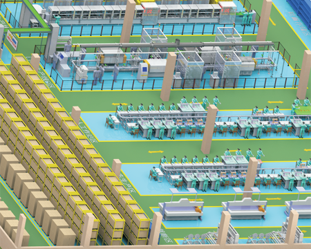
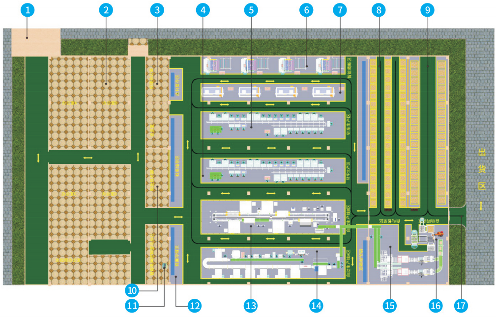
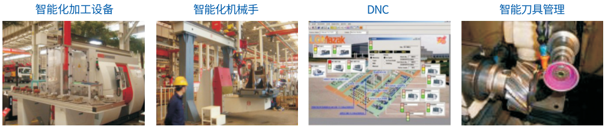
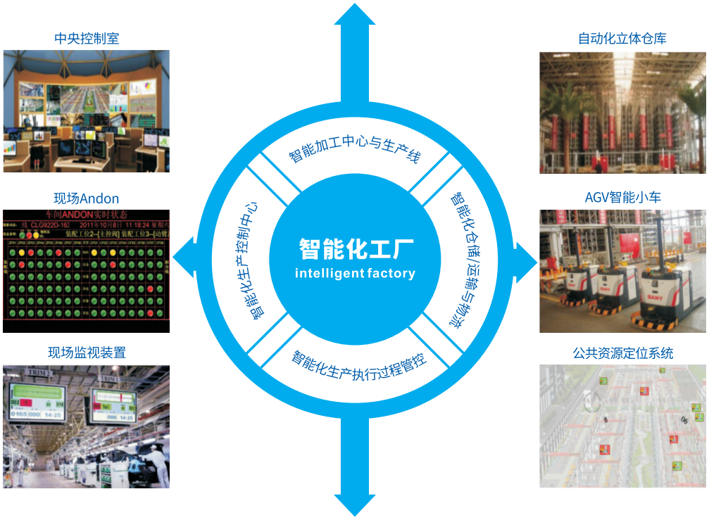
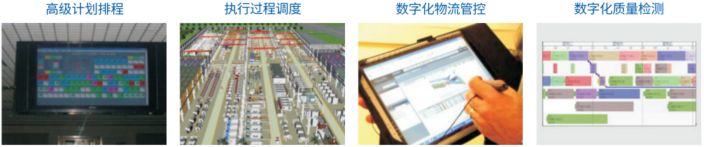
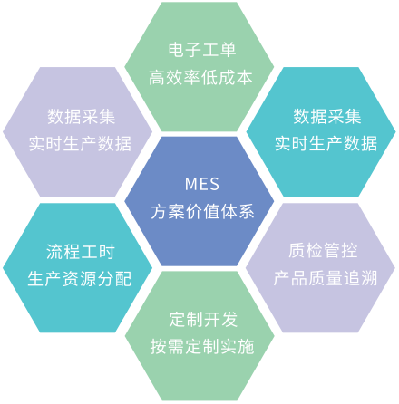
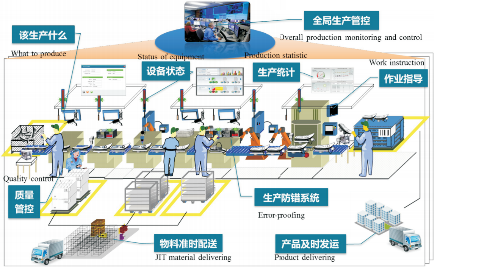

Tightly focused on solving real-world production management challenges in footwear manufacturing
The iHua MES solution addresses the core challenge of real-time production data collection on the factory floor — by introducing RFID electronic work orders. For high-end footwear enterprises dealing with small-batch, high-variety orders (even single-pair custom orders), the system adds electronic single-piece process guidance at workstations, enabling true lean production and improved efficiency.

How intelligent manufacturing execution transforms your production floor
RFID electronic work orders capture authentic production data from every station in real time — eliminating manual recording errors and delays.
Electronic single-piece process instructions at each workstation ensure every worker follows the exact specification for every order.
Seamless interface with ERP and other information systems. Eliminate data silos. Achieve true information integration across your enterprise.
Transparent, real-time, massive production data collection — with intelligent data mining that becomes a powerful driver for business growth.
Complete production traceability from raw materials to finished product. Pinpoint quality issues instantly and implement corrective actions.
Dynamic production scheduling and real-time progress tracking. Respond to order changes, machine downtime, and priority shifts in real time.
Five pillars of the intelligent footwear factory



A centralized dashboard presenting key equipment status, quality data, and real-time analytics charts. Multi-format visual display supporting decision-making at every level — from shop floor supervisor to factory director.
Real-time KPI dashboards. Equipment OEE monitoring. Quality trend charts. Production progress tracking. Andon alert systems. All accessible via large-screen displays, PCs, and mobile devices.
During production and assembly, sensors, CNC systems, or RFID automatically collect data on production volume, quality, energy consumption, and equipment performance (OEE). Electronic dashboards display real-time status with error-proofing capabilities.
3D vision systems. Robot workstations. Conveyor automation. PLC-controlled equipment. Touchscreen HMIs with data collection. Automatic quality inspection stations.
MES is the cornerstone of smart factory implementation — connecting upstream ERP systems with downstream PLC controllers, data collectors, barcode scanners, and inspection instruments. It strengthens ERP production plan execution and provides real-time feedback on production progress.
RFID electronic work orders. Production scheduling & dispatching. Quality inspection management. Material traceability. Equipment maintenance. Worker performance tracking.
Material transfer via guide-rail industrial robots, gantry manipulators, AGVs (Automated Guided Vehicles), RGVs (Rail Guided Vehicles), or overhead conveyor systems. Automated warehouse and roller conveyor integration are key elements requiring systematic analysis in smart factory planning.
AGV material delivery. Automated storage & retrieval. Conveyor systems. Robot material handling. RFID tracking. Just-in-time material supply to workstations.
The fundamental foundation for smart factories, Industry 4.0, and MES implementation: achieving M2M (Machine-to-Machine) communication. Establishing a unified factory network where all equipment — from robots to conveyors to ovens — communicates and coordinates seamlessly.
Industrial IoT protocols. OPC-UA communication. PLC networking. Wireless sensor networks. Centralized equipment control. Predictive maintenance alerts. OEE real-time calculation.
Measurable results from intelligent factory transformation


From MES implementation to full factory digitalization — we partner with you every step of the way.
Start Your Digital Transformation